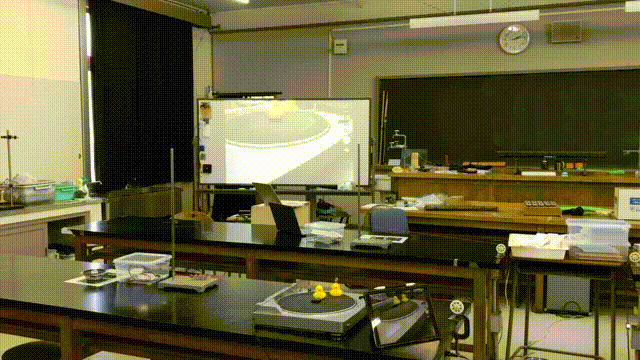
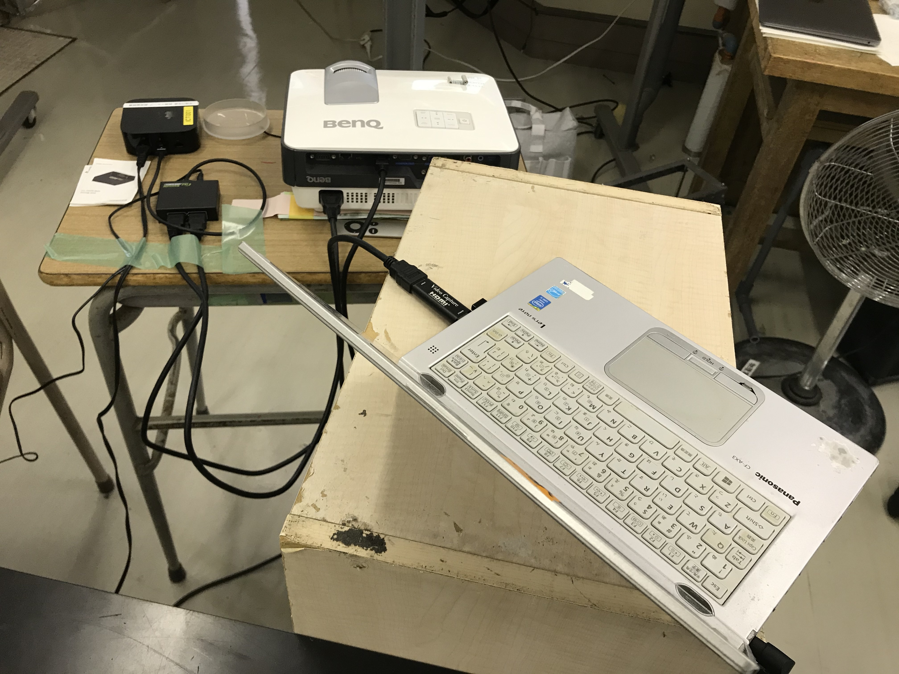
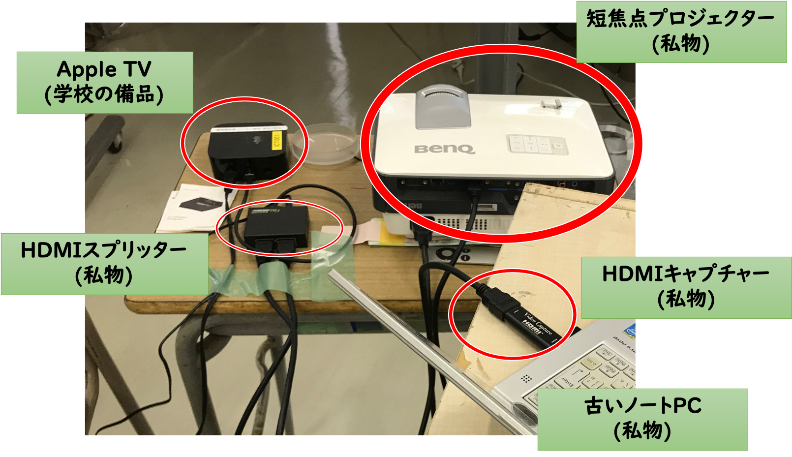
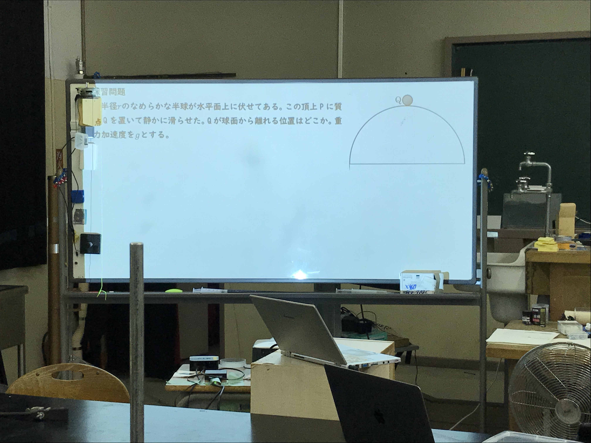
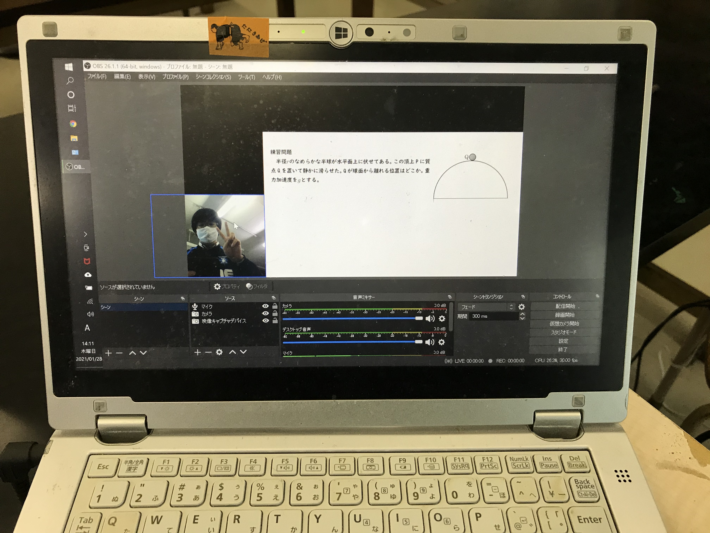
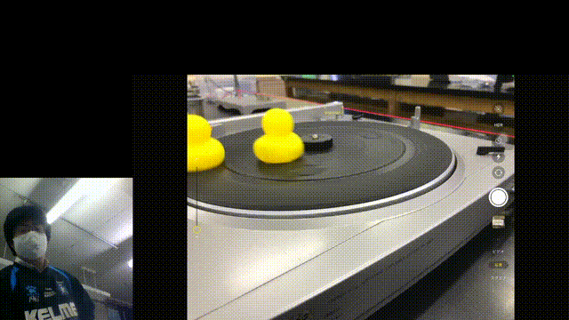

授業録画の方法
2021年2月例会（Zoom）
普段の授業のやり方
- AppleTVとiPadで、授業プリントをホワイトボードに表示
- 生徒に配った授業プリントと同じものをうつしながら、書き込んでいく。

普段の授業のやり方(続き)
- 書画カメラ風の使い方もできる。

授業を録画したい！
- 欠席生徒の対応
- 休校になるかも？
- 授業研究
- 授業動画作成の簡略化にもつながる。
録画環境

録画環境(解説)

録画中の画面
 録画できたもの

使ったもの
-
- 運よく、近くのハードオフで見つけて1500円くらいで買った。
-
- 入れ替わりが多い、上のリンク切れるかも
- Amazonで調べるとその時々で見つかる。
-
- PCのスペックが低くても耐えてくれそう。
使ったもの(続き)
- Apple TV
- iPad
- プロジェクター
- 誰も使ってなかったホワイトボード
感想
- ストレスなく、授業録画&配信ができた。
- 生徒の声が結構入る＆生配信だと編集ができない。
- 生徒の雑談が配信に混じると、“放送事故”
参考にしたもの
おまけ
- 上田先生の授業で扱っていた、“確率ロボティクス” という学問が、面白かった。
- 測定精度の限界があるから、ロボットは自分の現在位置を正確には把握できない。
- "信念"という不確定性のある量を元に、自分の位置を推測しながら運動をする。